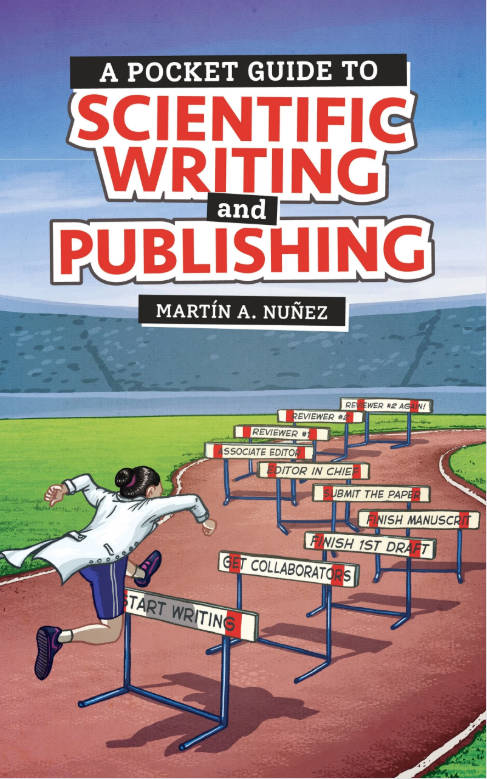

An Essay in “A Pocket Guide to Scientific Writing and Publishing”
This book was written by Martin A. Nuñez, in which Early-career scientists and postgraduates would find it especially useful, as would others.
I just finished my reading of this book recently. At the end of this book, Martin invited a lot of scientific researchers to share their experience of writing. The following essay written by Ana Pineda (Academic Writing and Productivity Coach) impressed me the most. Here after is the extract I want to share:
Writing is not editing. Nor reading.
When we finally find time to sit to write, most of us have built an ineffective habit since childhood. Picture this, you write one sentence, then read it, and correct a few words. You continue and write the next sentence, you read that one and the one before. Correct some words and think you're doing it terribly and that this doesn't make sense. But you continue writing and suddenly you wonder in which paper you read it to insert the citation. And you cannot remember, so while you start thinking you don't know enough about the topic, google there we go. Luckily you find a couple of papers, print them to fully read them, and now you're there at the printer chatting with a colleague sipping the dirty coffee from the machine when this was supposed to be a writing session.
Or if you don't like coffee, you may be reading the paper you just printed. When this was supposed to be a writing session. This scene is something I and most (if not all) of my students have lived. And a pure example of multitasking. Multitasking is not productive. And why multitasking is so bad for you write comes from different aspects:
1. Task switching needs brain power, so you'll be slower when you multitask than when you do the tasks at separate moments.
2. Writing is a creative task- we need a part of our brain that brings ideas and puts them in words in your mind and then in the document. It's a task that needs flow!
3. Editing is a task that requires critical thinking and works with a different part of your brain. The one searching for mistakes and what is not working. And not only interrupts your creativity, but it also brings negative beliefs of the type "I'm not doing a good job" or "I'm not good enough".
And well, going to the printer and drinking coffee are definitely different types of tasks! So instead, try this:
1. Put a timer and write freely without reading what you write. No editing. Just thinking and writing as if you were speaking. You can start with 10 minutes, and then increase it to 25 min (pomodoro-style).
2. Then it's time to edit. Change what you don't like, delete words, and insert citations if you remember. Still, you're editing, not reading, so keep the reading time for another moment.
Free writing is a skill that will boost your creativity and your writing. And guess what, you can then always use Al to gather some help to edit the text that you wrote and has your ideas. There are a lot of mini strategies and habits that you can stack before and after this strategy. But the best is that you experiment with what works for you.
Yes, I’m quite agree with Ana. The situations she gave truly reflected what I used to be during my writing process and I never realized it should be a serious problem.
Keep going.
